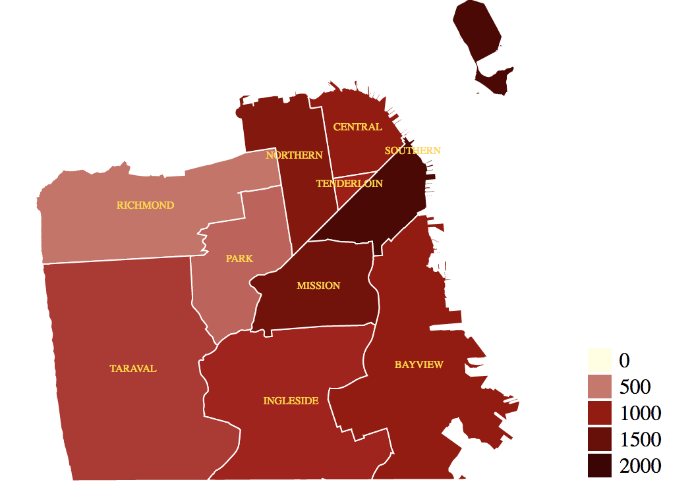
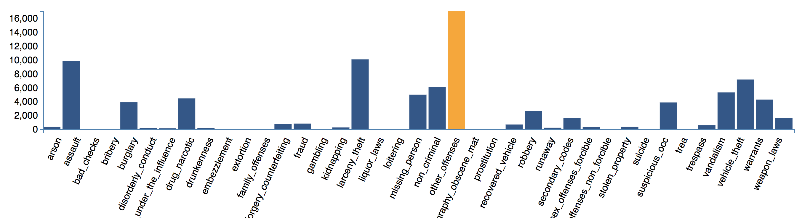
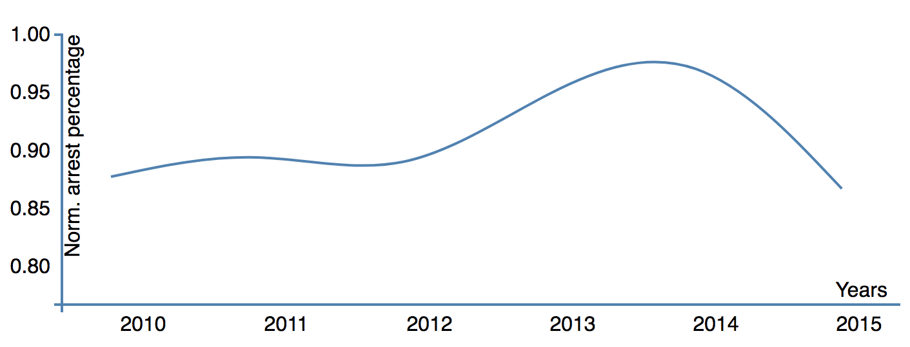

Introduction
The City and County of San Francisco updates and publishes the SF Open Data that forms our main dataset.
This dataset contains information about the type of crime, when and where the crime was committed, and the police district the crime was committed in.
Furthermore there is another dataset that contains the geographical coordinates of the police districts,
this dataset also contains the population sizes for each district. This second set was used to plot the data into a map of San Francisco.
This visualisation aims to identify the change in the percentage of crimes resulting in arrests per year,
as well as identify hotspots for particular crimes at particular hours in each district.
Plots
Number of crimes per police district
In the previous map dark red means higher number of crimes and light red the opposite.
Number of crimes per crime crime category
Average percentage of crimes per year

Data discoveries
According to the senior fellow at PPIC, Magnus Lofstrom California's violent crime rate increased by 3.7% in 2016,however the trend is still low when comparing it to the previous years. We can confirm this fact with our third graph.
With our barplot we can say that the top three crimes in San Francisco are other offenses, larceny_theft and assault.
With the map we can very clearly see that most crimes are comitted in the southern police district and in the mission district.
The district Park has one of the lowest despite it being right next to the mission district.